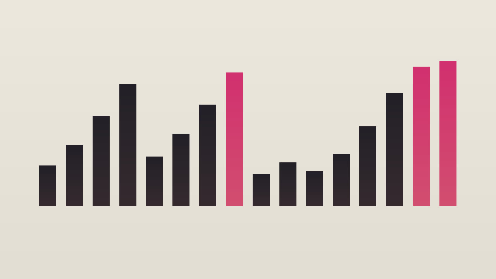

Eight 16-bar hooks · accent, voicing, ending
Offbeat Ninth

right hand velocity 105 and up left hand Bar height follows velocity.
Reading the MIDI.
Piano riffs use MIDI 48 to 84, at most six notes at once. Notes below 60 are the left hand. Notes from 60 up are the right hand. Bass references are monophonic, MIDI 28 to 50, and are not part of the core count.
Use either the combined arrangement or the separate parts. Do not stack the part files on top of the combined file.
Files
| Part | Role | Var | Count | BPM | Notes |
|---|---|---|---|---|---|
| s01.riff.a | piano-riff | a | core | 122 | 194 |
| s01.riff.b | piano-riff | b | core | 122 | 134 |
| s01.bass.a | bass-reference | a | bass reference | 122 | 32 |
| s01.bass.b | bass-reference | b | bass reference | 122 | 32 |
| s02.riff.a | piano-riff | a | core | 126 | 138 |
| s02.riff.b | piano-riff | b | core | 126 | 49 |
| s02.bass.a | bass-reference | a | bass reference | 126 | 32 |
| s02.bass.b | bass-reference | b | bass reference | 126 | 16 |
| s03.riff.a | piano-riff | a | core | 120 | 77 |
| s03.riff.b | piano-riff | b | core | 120 | 104 |
| s03.bass.a | bass-reference | a | bass reference | 120 | 16 |
| s03.bass.b | bass-reference | b | bass reference | 120 | 32 |
| s04.riff.a | piano-riff | a | core | 128 | 248 |
| s04.riff.b | piano-riff | b | core | 128 | 230 |
| s04.bass.a | bass-reference | a | bass reference | 128 | 32 |
| s04.bass.b | bass-reference | b | bass reference | 128 | 16 |
| s05.riff.a | piano-riff | a | core | 124 | 136 |
| s05.riff.b | piano-riff | b | core | 124 | 139 |
| s05.bass.a | bass-reference | a | bass reference | 124 | 32 |
| s05.bass.b | bass-reference | b | bass reference | 124 | 32 |
| s06.riff.a | piano-riff | a | core | 118 | 240 |
| s06.riff.b | piano-riff | b | core | 118 | 68 |
| s06.bass.a | bass-reference | a | bass reference | 118 | 32 |
| s06.bass.b | bass-reference | b | bass reference | 118 | 16 |
| s07.riff.a | piano-riff | a | core | 130 | 64 |
| s07.riff.b | piano-riff | b | core | 130 | 70 |
| s07.bass.a | bass-reference | a | bass reference | 130 | 16 |
| s07.bass.b | bass-reference | b | bass reference | 130 | 16 |
| s08.riff.a | piano-riff | a | core | 125 | 132 |
| s08.riff.b | piano-riff | b | core | 125 | 121 |
| s08.bass.a | bass-reference | a | bass reference | 125 | 32 |
| s08.bass.b | bass-reference | b | bass reference | 125 | 32 |
Recorded reading · study 01 variation A, all 16 bars
This MP3 is 31.48 seconds. preview, not a master. The film is 31.46 seconds and shows preview, not master.
No program changes are encoded. A conventional GM player will normally use its default piano program for pitched channels unless configured otherwise; compatible GM channel 10 percussion is treated separately. Player behavior may vary.
No human listening audition was performed for this build.
The GitHub repository is https://github.com/mizcausevic-dev/90s-piano-house-riffs and it is public. The catalog page is https://mizcausevic-dev.github.io/90s-piano-house-riffs/ .